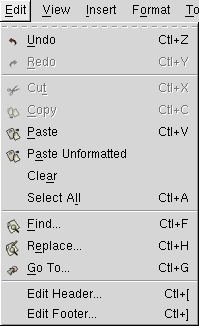

Edit Menu

Undo
This command undoes an action. Every application of the Undo command undoes a single action, so to undo many actions you must apply it many times.
AbiWord has a somewhat sophisticated notion of a 'single action'. If it were to undo typing a single keystroke at a time, it would take too long to do anything useful. Thus, a run of typing counts as a single action. The run is ended by a different kind of action: deleting something, typing a return, or selecting a menu action.
AbiWord has 'unlimited undo'. This means that you can undo all the actions you have taken since opening the document. If you save a document, close it, and reopen it, you cannot undo things you did before saving it. If you save a document but leave it open, you can undo your actions.
Undo itself does not count as an action.
Redo
Redo is the inverse of undo. It is only available when an action has been undone, and it redoes the most recently undone action. Like undo, it can be applied repeatedly to redo a large number of actions.
It is not possible to undo six actions, then leave the last undone and redo the rest. Actions can only be undone and redone in order.
Cut
Cut removes the selected text from the document and places it on the clipboard. This replaces any text previously placed on the clipboard. The formatting of the text is retained, as well as its content.
This command is only available when there is selected text.
Copy
Copy puts the selected text onto the clipboard, but does not remove it from the document.
This command is only available when there is selected text.
Paste
Paste adds the text on the clipboard to the document. If there is no text selected in the current document, the text is added as if it had been typed at the insertion point. If text is selected, the selected text is replaced by the text on the clipboard. The formatting of the text on the clipboard is preserved.
Paste Unformatted
This command pastes the text on the clipboard into the document, but does not paste its formatting. The pasted text takes on the formatting of the surrounding or preceding text.
Clear
Clear deletes the selected text.
Select All
This command selects the whole document.
Find
Find allows you to find words within a document. Selecting this command calls up the Find dialog.
Replace
Replace allows you search for occurrences of one word in your document and replace it with another. Selecting this command calls up the Replace dialog.
Go To
This command allows you to move rapidly through a document. Selecting it calls up the Go To dialog.
Edit Header
Selecting this command allows you to edit your document header. The header is an amount of text placed on every page of a document, above the top margin. You can edit it in exactly the same way as any other text.
To return to the main text, click within it to move the insertion point. Clicking within the header will move the insertion point back there.
Edit Footer
This command allows you to edit the document footer. The footer is the equivalent of the header, but below the bottom margin.